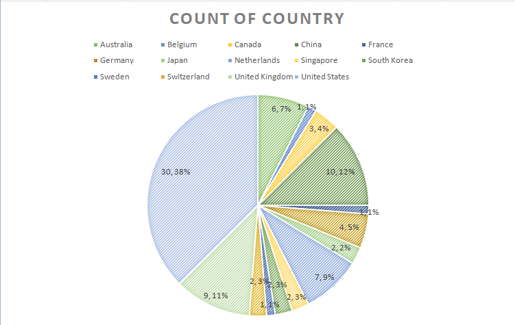

CONTINENT
Out of the seven continents, the Top 80 Universities Ranking only includes four. North America has the highest amount of universities at count 33 and it accounts for 41% of the schools in the rankings.
Meanwhile, Australia has the least amount of universities counting only 6 accounting only 8% of the ranking.
COUNTRY

There are 14 countries that have a/many university/ies that qualified for the Top 80. The graph shows that the United States has the most number of universities, having 30 in the ranking. Meanwhile Belgium, France, and Sweden have the least, counting only 1.
Based on the count, we can infer that the United States has plenty of great universities. This indicates a higher education system, strong investment in research, diverse educational opportunities, ample resources and funding, and international appeal. This suggests that the U.S. has a highly competitive and attractive educational landscape, fostering academic excellence and drawing both domestic and international talent. However, it's important to consider that rankings can vary depending on the criteria used. The country can see that education is important and that there is a need for a number of universities
NUMBER OF STUDENTS
Out of the seven continents, the Top 80 Universities Ranking only includes four. North America has the highest amount of universities at count 33 and it accounts for 41% of the schools in the rankings.
Meanwhile, Australia has the least amount of universities counting only 6 accounting only 8% of the ranking.
RESEARCH SCORES
The Research Score shows an evaluation used by universities to evaluate and quantify the research performance, productivity, and impact of their researchers, research groups, departments, or the institution as a whole. The histogram is bell shaped thus, the mean is the relevant data in this set. The mean is 76.38. The highest scoring university in this category is the University of Oxford (Europe) with a score of 99.7.
CITATION SCORES
The Citation Scores refer to a measure of the impact or influence of the research output of a university or its researchers. It is often associated with scholarly publications and is a way to quantify the reach and significance of academic work. The graph is skewed to the left. This means that the median at 92.6 is relevant for the data. Stanford University and Massachusetts Institute of Technology (North America) both hold the highest score in this category which is 99.8.
INTERNATIONAL OUTLOOK SCORES
The International Outlook is the ability of a university to take in students and faculty from the entire world. This displays the diversity a school has. The histogram shows that it is skewed to the left. The median, at 79.85 holds relevance for this data set because it is skewed to the left. The University of Hong Kong (Asia) holds the highest score in the category, scoring 98.7 showing their great diversity in their community.
OVERALL SCORES
The Overall Score is based on a combination of factors. These factors can include academic reputation, research output, faculty quality, student satisfaction, international diversity, and more. The overall score in a university ranking reflects how well the institution performs across these various criteria compared to other universities. The highest overall score also gives the university the highest rank. The median for this set is 75.55 since the graph is skewed to the right. The University of Oxford (Europe) holds the highest score at 96.4.
CONCLUSIONS
The data underscores the dominance of North American universities, particularly the United States, in global education rankings, with 41% of the top 80 universities located in North America. These institutions exhibit strong international outlook, reflecting their diversity and openness to global perspectives, making them attractive for students and researchers seeking international experiences.
However, the limited representation of only four continents in the top 80 highlights significant disparities in higher education. While North America excels, Australia, with the lowest representation, suggests potential challenges in research and recognition for institutions in that region. While North America presents excellent opportunities for education, it's vital to remember that success is not solely dictated by location. Personal dedication, hard work, and commitment to one's chosen field are equally crucial Success in your education has a lot of factors and this just shows how big your options are when it comes to having a good success in your education and later on in life.
The researchers can recommend applying for the following universities in terms of the categories they excel in: University of Oxford (research evaluation), Stanford University and Massachusetts Institute of Technology (citation evaluation), and The University of Hong Kong (international outlook).